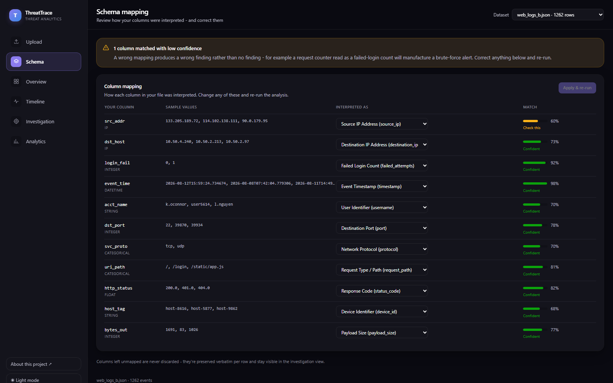

Every log source names the same field differently. ThreatTrace resolves them semantically - profiling each column's name, type, and actual values - then normalizes, detects threats, scores risk 0-100, and explains every finding with the evidence behind it.
The problem
Traditional pipelines need a hand-written mapping per data source. ThreatTrace embeds a description of each column - built from its name, inferred type, and observed value shape - and matches it against a canonical threat ontology by cosine similarity.
Columns the ontology doesn't recognize are never discarded - they're kept
verbatim per row in an extra_fields blob and stay visible during investigation.
Pipeline
Infer the type from real values (IPv4, datetime, integer, categorical, string) and
summarize their shape into a sentence - "Column named 'usr_fail_cnt'.
Inferred type: integer. Values 0-47, mean 2.10."
Score that descriptor against all 13 ontology concept descriptions by cosine
similarity, with bonuses for name-hint overlap and type compatibility - and a
penalty for type mismatch, which is what stops a string
cost_centre_code from being read as the integer status_code.
A per-column softmax converts raw scores into a 0-1 confidence that means the same thing regardless of which embedding backend is running.
Greedy highest-confidence-first bipartite matching, so two columns can never claim
the same concept. A lone IP column is resolved to source_ip, since that's
what every detector groups by.
Emit the canonical schema with missing fields left empty rather than invented, and everything unmapped retained verbatim.
sentence-transformers (MiniLM) when installed, or a pure scikit-learn
TF-IDF matcher when it isn't - no torch required. Both are tested to map every sample
column correctly, so the fallback is a real option, not a degraded mode.
No LLM call anywhere in the pipeline. Explanations are templates filled with measured evidence, so findings are reproducible, free, offline, and auditable - which matters when a verdict has to hold up in an incident review.
Detection
All grouped per source IP over densest sliding windows - a two-pointer scan finds the busiest window of a given size, so a burst is never split across two fixed buckets.
Many failed authentications against the same account from one IP in a short window.
One IP, many distinct accounts, few attempts each - the low attempts-per-user ratio is what separates it from brute force.
One IP touching many distinct destination ports; near-sequential runs are treated as a stronger signal.
Many distinct paths with a high 4xx/5xx ratio, or hits on sensitive routes - /admin, /.env, /.git/config, traversal.
Unsupervised scoring over per-IP features: request rate, failure ratio, distinct ports/destinations/paths/users, mean payload size, off-hours ratio. It both supplies the anomaly term of every risk score and independently flags IPs that match no rule at all - the unknown-threat case.
If a log has no username column, credential spraying genuinely isn't observable in it - so that detector stands down instead of guessing. A 4-column dataset fires two of the five, and says so.
Scoring & explanation
Deterministic and weighted - never a black box, always reproducible.
The dashboard
Colorblind-safe palette verified with a ΔE/CVD validator. Severity always carries an icon and a text label, so color never conveys meaning alone - and light and dark are independently designed, not auto-inverted.

Compatibility
Column names genuinely don't matter. Column structure does. Four hard requirements - all four, or the analysis honestly returns nothing.
Detectors count rows within a time window. Pre-aggregated data can't be windowed.
Every detector and the anomaly model group by source IP - it's the entity findings attach to. Any name works: src_addr, client_ip, IpAddress, id.orig_h, rhost.
Every rule is time-windowed. ISO 8601, epoch floats, and MM/DD/YYYY hh:mm:ss AM all parse.
CSV, JSON arrays, records nested under any wrapper key (Elasticsearch hits.hits, CloudTrail Records), and newline-delimited JSON.
message column → 0 columns mapped. There is no free-text parser.Does each row say who (IP), when (timestamp), and what happened - in columns? If yes, it'll work, whatever those columns are called. If no, it loads, maps what it can, and reports zero findings rather than inventing them.
conn.logIP and time are present, so anomaly detection and usually port-scanning work, but rule coverage is patchy.
| Detector | Source IP | Timestamp | Also needs |
|---|---|---|---|
| Brute force | required | required | username · failure signal |
| Credential spraying | required | required | username · failure signal |
| Port scanning | required | required | port |
| Endpoint probing | required | required | request path · status code (helps) |
| Behavioural anomaly | required | required | nothing - uses whatever exists |
Honest limitations
Tested against formats the system was not designed around - Zeek, a Windows Security export, an Elasticsearch/ECS response, NDJSON, a non-security spreadsheet, and tiny/empty files. Ingestion held up. Detection is more nuanced.
Confident mappings (above ~0.7) are reliable. Low-confidence ones are frequently wrong, and semantic similarity has no way to know that "LogonType" is not a failure count. This is inherent to the approach - so the fix is to make it visible and correctable rather than to pretend it doesn't happen.
Two real cases from the test suite: Zeek's id.resp_p landed on
status_code instead of port, so that file's port scan went
undetected; and a Windows export's client-side IpPort landed on
port, manufacturing a spurious port-scan alert.
It exists precisely so a bad mapping is visible before you trust a finding. Anything under ~0.6 deserves a look.
The Schema page flags every low-confidence match, shows each column's type and sample values, and lets you reassign it. Apply & re-run rebuilds detections, scores, and explanations from the corrected mapping.
On an unfamiliar format, treat findings as leads. On a known format whose mapping you've checked once, they're trustworthy.
Detector thresholds are tuned to the synthetic sample data (e.g. 8 failed auths / 10 min) and should be recalibrated against your own baseline. The bundled GeoIP table is a small illustrative one for offline demos - swap in a real database for production. Uploads are analyzed synchronously, so very large files would want a job queue.
No tested format crashes. A non-security spreadsheet correctly yields zero findings rather than invented ones. Malformed rows - bad IPs, unparseable timestamps, non-numeric counts - degrade to empty values instead of raising. Unmappable columns are always preserved.